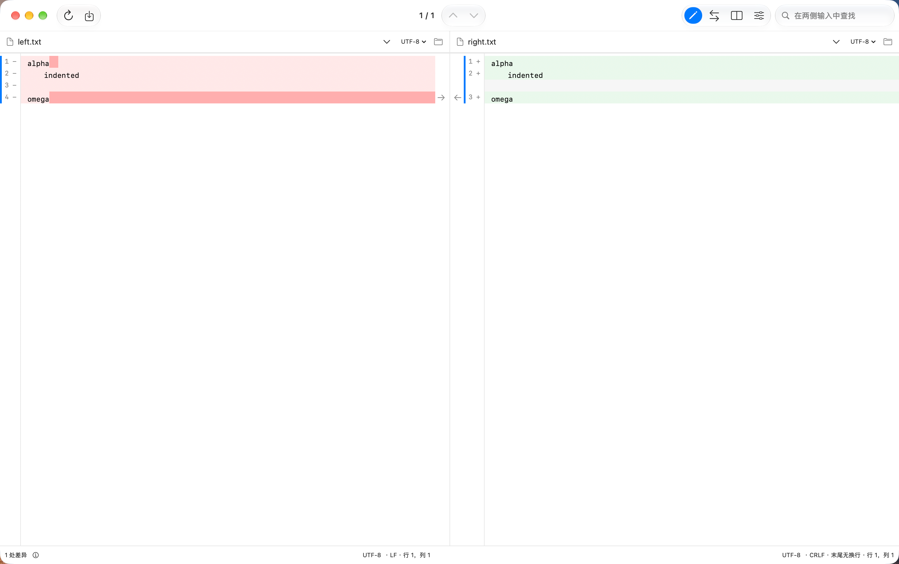
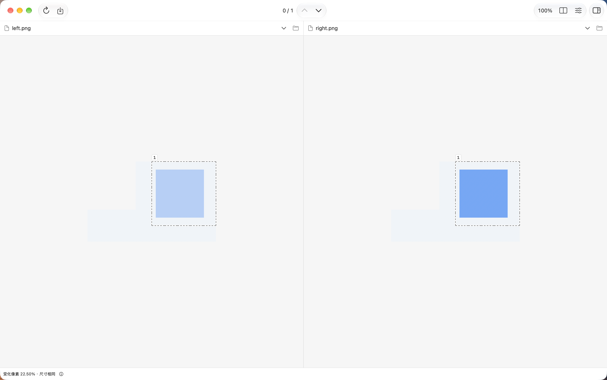
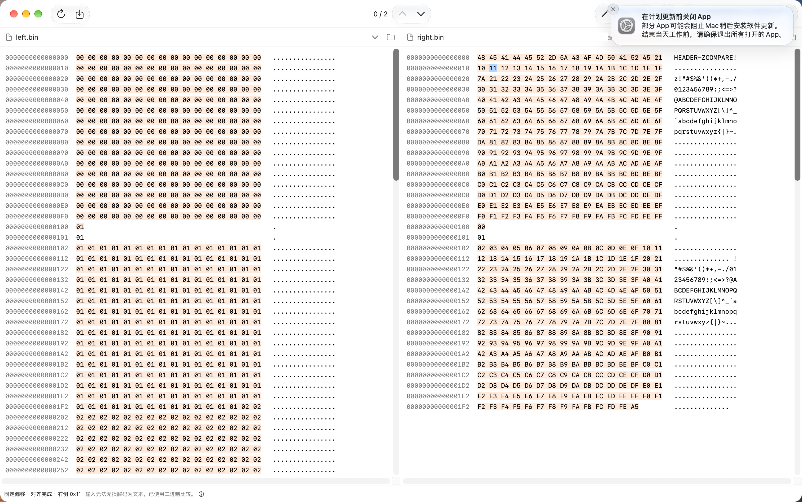

处理合并冲突
对照共同原版和两侧修改，逐处采用内容并编辑合并结果。



JSONPlistTOMLYAML
定位改动的字段和值，按规则配对数组元素。
CSVTSVXLSX
按行序或指定键配对记录。XLSX 可分别比较公式与已保存的值。
PDF
分别检查页面的视觉变化和提取文本，必要时手动配对页面。
ZIPTARTAR.GZ
直接比较包内条目、文件内容和元数据，按需提取文件。
在比较工作台里完成审阅、选择修改，或把当前比较留到下一次。
对照共同原版和两侧修改，逐处采用内容并编辑合并结果。
从目录差异打开文件比较，逐项检查变化，再预览要应用的更新。
把比较进度保存为会话，或将结果导出为离线报告。
打开上一版发布目录和待发布目录，筛出有变化的文件。
查看 config.json 的超时字段变化。回到目录将该文件标为「待跟进」，备注「发布前确认超时设置」。
保存比较会话，下次从原处继续，或导出带审阅状态的 HTML 报告。